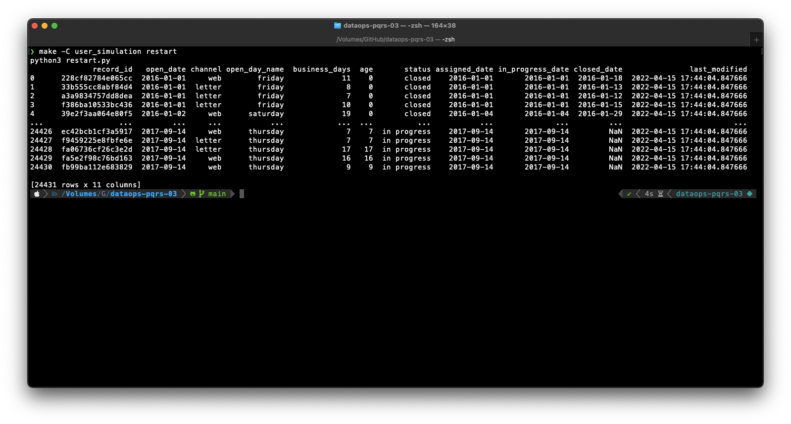
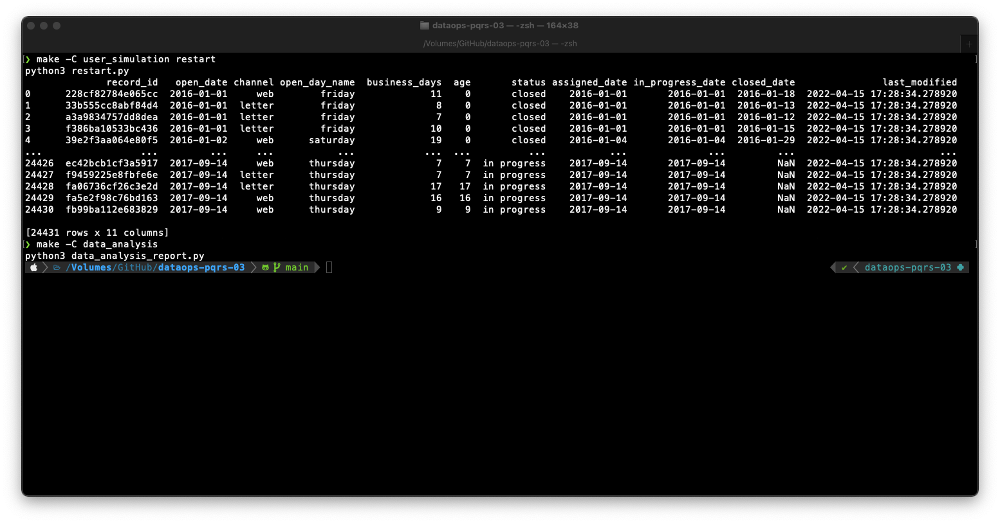
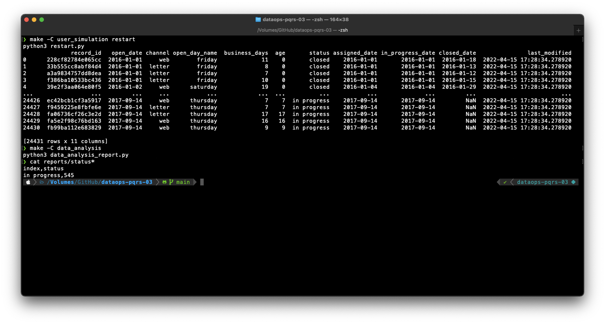
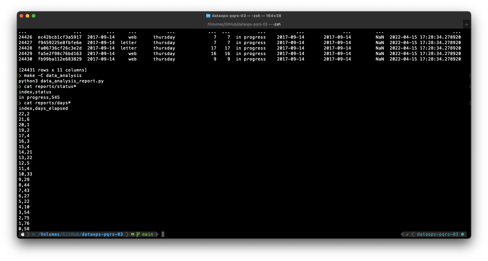

Incorporación de los analistas de datos — 0:00 min
0:00 min | Ultima modificación: Abril 14, 2022 | YouTube
Definición de la situación actual

Laura se encuentra sofocada con los constantes llamados de antención de Control Interno sobre el equipo.
Recientement, Claudia se incorporó al equipo para ayudar a la gestión de la información y sumar capacidades analíticas a las tareas en línea.
Laura solicita a Clauida que prepare un informe semanal, que debe entregarle el lunes a las 9:00 am sobre el avance de la atención de las PQRS. Claudia espera usar esta información para gestionar mejor el equipo y evitar aliviar los cuellos de botella en la atención de los documentos. La información podría servirle para justificar la incorporación de nuevo personal al departamento de atención al cliente.
Desarrollo del reporte de avance.
Claudia desarrollará el reporte usando Python (con Jupyter, pero acá se hará directamente en Python por facilidad). El reporte indicará la cantidad de documentos en los diferentes estados.
Se presentan retrazos debido a que:
TI debe configurar la máquina y establecer permisos para que Claudia pueda desarrollar los scripts en su máquina.
Luis debe entregar una copia local de la tabla transaccional para que Clauida desarrolle y pruebe el programa.
Una vez se han desarrollado los scripts, Clauida debe esperar los permisos para consultar directamente el transaccional. Afortunadamente, Luis no es responsable de ejecutar este informe, el cual se realiza con mucha más frecuencia que la prepración de informes para control interno, los cuales también son su responsabilidad.
Adicionalmente, debe construir los reportes el lunes a primera hora, para poder entregar información filedigna de la situación actual en la reunión de las 9:00 am.
Otros problemas
Qué pasa si:
Claudia se enferma o se retira de la compañía.
Hay cambios en el transaccional, como cambios de nombres de campos, o actualización de librerías.
Se daña la conexión al transaccional.
Falla el equipo de Claudia.
Repositorio en GitHub
El código completo de este documento se encuentra disponible en:
https://github.com/jdvelasq/dataops-pqrs-on-premises
internal_control/Makefile
https://github.com/jdvelasq/dataops-pqrs-on-premises/blob/main/internal_control/Makefile
data_analysis/data_analysis.py
Ejemplo
Se ejecutan en el directorio raíz del repo:
$ make -C user_simulation restart

$ make -C data_analysis

$ cat reports/status*

$ cat reports/days*
